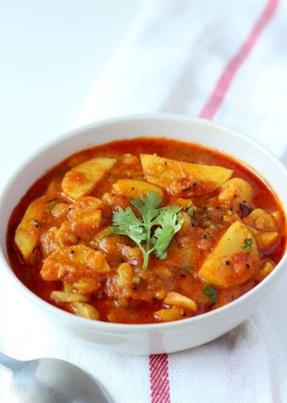

બટાકા શાક

સમગ્રીઓ
| ૨&૧/૨ કપ છાલ ઉતારેલાં અને કાપેલાં બટાટાનાં ટૂકડાઓ |
| ૧/૪ ટીસ્પૂન રાઈ |
| ૧/૨ ટીસ્પૂન જીરું |
| ૨ ટીસ્પૂન લીલા મરચાં-આદુંની પેસ્ટ |
| ૧ ટમેટું, સમારેલું |
| ૧ ચપટી હીંગ |
| ૧/૨ ટીસ્પૂન હળદર |
| ૧ ટીસ્પૂન લાલ મરચું પાઉડર |
| ૨ ટીસ્પૂન ધાણાજીરું |
| ૧ ટીસ્પૂન ખાંડ (વૈકલ્પિક) |
| ૨ ટેબલસ્પૂન તેલ |
| ૧&૧/૨ ટેબલસ્પૂન તાજી કોથમીર, સમારેલી |
| ૧&૧/૪ કપ પાણી |
| મીઠું, સ્વાદ અનુસાર |
બનાવવા ની રીત
એક જાડા તળિયાવાળી કડાઈમાં મધ્યમ આંચ ઉપર તેલ ગરમ કરો. તેમાં રાઈ નાંખો; જ્યારે તે તતડે ત્યારે તેમાં જીરું, હીંગ,
લીલા મરચાં-આદુંની પેસ્ટ નાંખો. બરાબર મિક્સ કરો.
તેમાં બટાટાનાં ટૂકડાઓ નાંખો અને ૩-૪ મિનિટ માટે ચડવા દો.
સમારેલું ટમેટું, મીઠું અને ખાંડ નાંખો અને ૩ મિનિટ માટે ચડવા દો.
લાલ મરચું પાઉડર અને હળદર નાંખો અને ૧ મિનિટ માટે પકાવો.
5&૧/૪ કપ પાણી નાંખો અને મધ્યમ આંચ ઉપર મિશ્રણને ઉકળવા દો. જ્યારે તે ઉકળવા લાગે, આંચ ધીમી કરી દો અને ધીમી આંચ
ઉપર ઢાંકીને ચડવા દો, દરેક ૪-૫ મિનિટ પછી તેને ચમચાથી હલાવતા રહો.
તેને પૂરી રીતે પાકવામાં લગભગ ૧૦-૧૫ મિનિટનો સમય લાગશે. જો જરૂર લાગે તો વધારે પાણી નાંખો અને થોડી વધારે મિનિટ માટે
ચડવા દો. (પકાવવાનો સમય અને પાણી બટાટાના પ્રકાર અને કડાઈની જાડાઈના પ્રમાણે અલગ હોઈ શકે છે.)
તેમાં ધાણાજીરું નાંખો, મિશ્રણને બરાબર મિક્સ કરો. ગેસ બંધ કરી દો. શાકને લીલી કોથમીરથી સજાવો. બટાટાનું શાક
પીરસવા માટે તૈયાર છે.